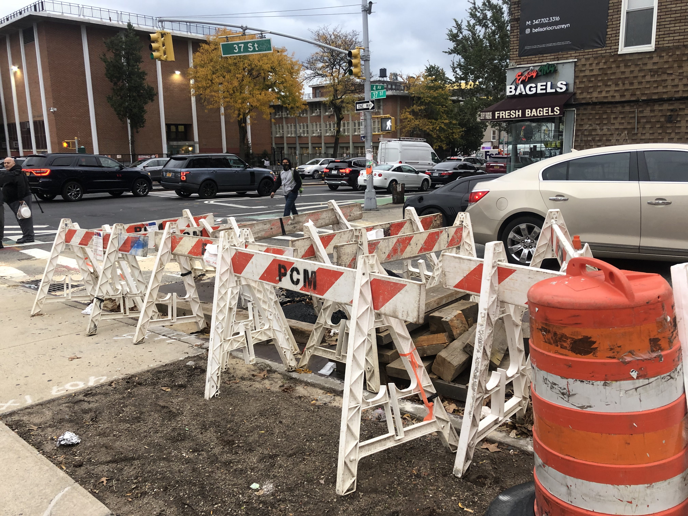

By Christine Zirneklis
November 18, 2021
More and more New York residents are seeing their streets flood in heavy rains. Big storms this past summer, like Henri and Ida, have magnified this ongoing issue: flooding homes, trapping people in flooded basements, and leaving behind toxic mold.
Sewer overflow is a common danger when flooding from more intense storms meets stormwater management systems that can’t handle the volume, particularly if there is existing sewer damage. Pipes, toilets, and other water fixtures inside homes can spew out dirty water, exacerbating flooding. While the DEP and other city agencies have long-term plans to retrofit the sewer system, and the city council just passed a plan to develop a comprehensive 5-borough plan, many residents across the city are experiencing flooding now.
Tyler Taba, a fellow with the Waterfront Alliance, highlighted the importance of strengthening existing infrastructure in the First 100 Day Priorities for the Next New York Mayor plan from Rise to Resilience, a coalition of over 50 community and environmental organizations that the Waterfront Alliance has spearheaded. Among it’s priority actions are to “Immediately commit resources to New York City Department of Environmental Protection (DEP) and the Office of Emergency Management (OEM) to ensure not one more New Yorker is caught and killed by floodwaters in their own home.” They say the city should “Prioritize funding for a comprehensive citywide initiative to expand drain capacity throughout the city to prevent flooding, starting with building out stormwater sewers or retention tanks in vulnerable areas with limited drainage systems.”
The current recourse for residents who have identified sewer or drainage problems on their street is to submit a request via 311. So: in which community districts do we see a higher proportion of these sewer requests? Queens Community District 12, covering neighborhoods: Hollis, Jamaica, Jamaica Center, North Springfield Gardens, Rochdale, South Jamaica, and St. Albans had almost 29 times as many requests as Manhattan District 9—Morningside and Hamilton Heights. The median per capita income in Queens District 12 is $27, 377 and the median per capita income in Manhattan District 9 is almost double that at $44,184.